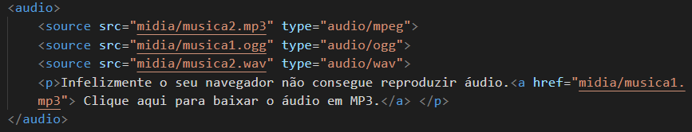

Tente abrir esse site em vários dispositivos diferentes ou simplesmente aumente e diminua o tamanho do seu navegador
Para trabalharmos com imagens com tamanhos diferentes, pois o usuário pode abrir o site em plataformas distintas, utilizamos a tag Picture e dentro dela utilizamos o source media. Devemos seguir na sequencia de tamanhos do maior para o menor, G>M>P>PP e assim sucessivamente. Devemos informar também em número de pixels para o site mudar o tamanho automaticamente, segue um exemplo abaixo: Dentro de Picture: ( source media="(max-width: 500px)" srcset="imagens/foto-.png" type ="image/png"> source media="(max-width: 750px)" srcset="imagens/foto-m.png" type="image/png"> img src="imagens/foto-g.png" alt="imagem flexível">
Vamos aprender a repdoruzir áudios em HTML5.
Para inserirmos um áudio MP3 em um site, utilizamos a tag Audio SRC e dentro das aspas chamamos o link, outro item importante é depois das as aspas inserir o controls autoplay, isso faz com que o usuário controle se quer pausar ou continuar o áudio.
Outra informações importante é que dependendo do navegador do usuário, o arquivo MP3 pode não rodar, neste caso podemos ter o arquivo nos formatos mais usados como o MP3,OGG, WAV, o WAV costuma ser muito pesado e dificultar o carregamento do site, então não recomendamos utilizar. Para termos mais de uma oção de áudio, fazemos parecido com o processo de imagens em formatos diferente, porém utilizamos a tag Audio e dentro inserimos um Source como no exemplo abaixo, ai neste caso se o navegor não suportar MP3 ele vai reproduzir em OGG. Lembrando que ele vai priorizar a sequencia informada no código.
